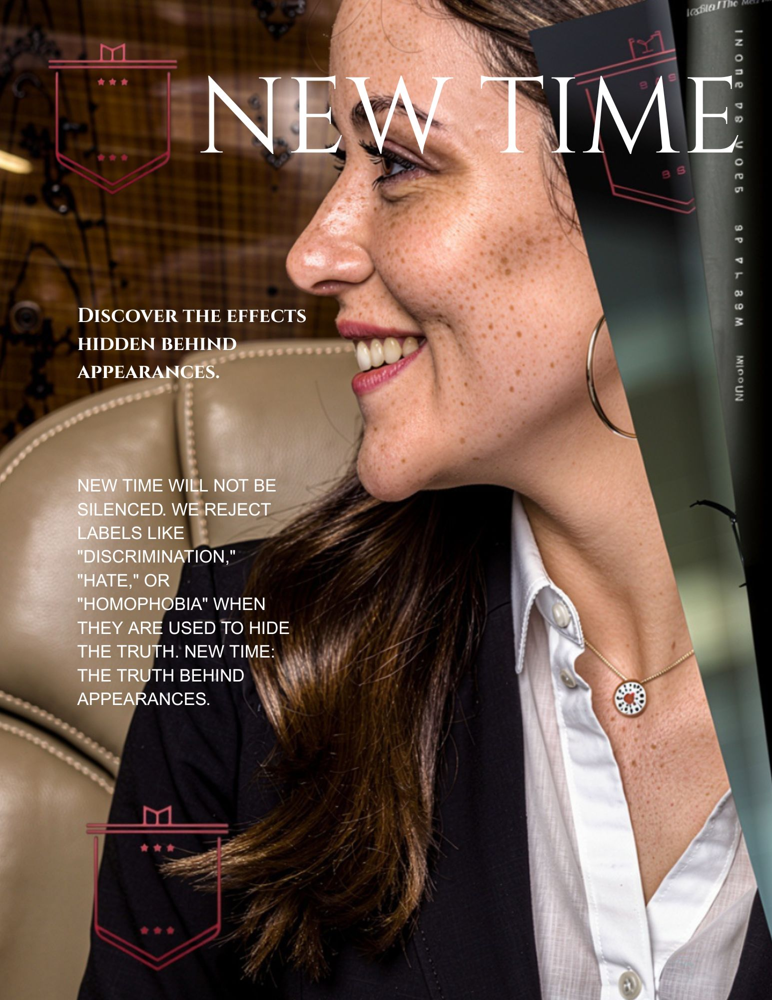
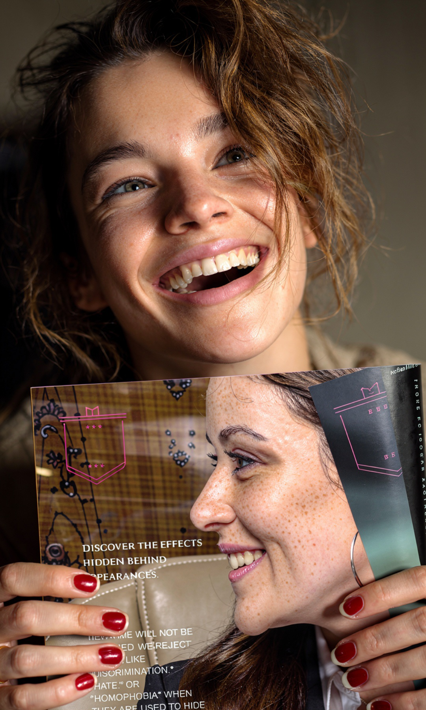
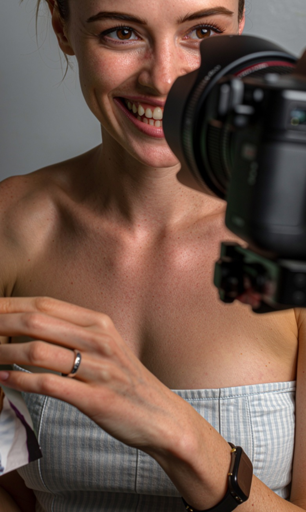

New Time Magazine: Isn’t your typical business publication. We go beyond quarterly reports and market trends to cover what actually matters: happiness, fashion, professional growth, and even the harder parts of life.
We’re not here to repackage the same old stories. At New Time Magazine, you get reality — unfiltered, relevant, and worth your time.


New Time doesn’t hide behind false narratives. We expose the lies that masquerade as appearances and uncover the truths they’re designed to conceal. Behind that façade, you’ll often find deception and decay.
New Time Magazine delivers more than polished visuals. We give you substance: the critical insights and unvarnished truths that break the monotony of mainstream commercial media. Other magazines treat you like a data point. At New Time, we see you for what you are: a human in search of meaning.